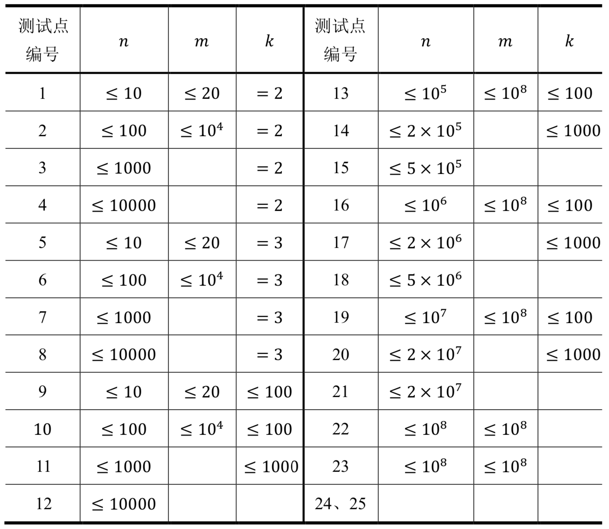

【样例1说明】
满足条件的数分别是：
1/1 = 1.0000 ……
1/3 = 0.3333 ……
2/1 = 2.0000 ……
2/3 = 0.6666……
1/1和2/2虽然都是纯循环小数，但因为它们相等，因此只计数一次；同样，1/3和2/6也只计数一次。
【提示】
这部分将提供一个将分数化为对应的小数的方法，如果你已经熟悉这个方法，你不必阅读本提示。
分数可以通过除法，用分子除以分母化为对应的小数。有些分数在除法过程中无法除尽，这样的分数在不断进行的除法过程中余数一定会重复出现。从商数的个位所对应的余数起，设第一次重复出现的余数前两次出现的位置所对应的商数位分别是小数点后第$𝑎$位和小数点后第$𝑏$位（特殊地：如果其中一个对应的商数位是个位，则认为$𝑎 = 0$；不妨设$𝑎 < 𝑏$），则其循环部分可以用小数点后第$𝑎 + 1$位到小数点后第$𝑏$位的循环来表示。
例如：在十进制下，将$\frac{5}{11}$转化为小数时，个位开始的商数依次为4,5,4, ...，对应的余数分别为6,5,6,...。余数第一次重复出现的位置是个位和小数点后第2位，那么$𝑎 = 0, 𝑏 = 2$即其循环部分可以用小数点第1位到第3位来表示。表示为：$\frac{5}{11}= 0.45454545 ... = 0.\dot{4}\dot{5}$。
在十进制下，将$\frac{1}{6}$转化为小数时，个位开始的商数依次为1,6,6, ...，对应的余数分别为4,4,4...。余数第一次重复出现的位置是小数点后第1位和小数点后第2位，即其循环部分可以用小数点后第2位来表示。表示为：$\frac{1}{6}=0.1666 ... ... = 0.\dot{1}\dot{6}$。
需要注意的是：商数重复出现并不代表进入了循环节。
【子任务】
对于所有的测试点，保证$1≤𝑛≤10^9,1≤𝑚≤10^9,2≤𝑘≤2000$。对于每个测试点，有以下约束（其中留空的表示没有特殊的约束）：

 Comet OJ
Comet OJ